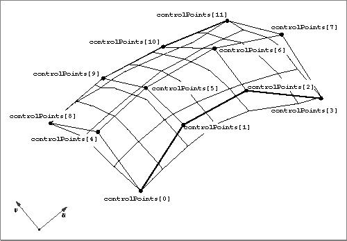

NURB Patches
A NURB patch is a surface defined by ratios of B-spline surfaces, which are three-dimensional analogs of B-spline curves. A NURB patch is defined by theTQ3NURBPatchDatadata type. See "Creating and Editing NURB Patches," beginning on page 4-166 for a description of the routines you can use to create and edit NURB patches. Figure 4-19 shows a NURB patch.
typedef struct TQ3NURBPatchData { unsigned long uOrder; unsigned long vOrder; unsigned long numRows; unsigned long numColumns; TQ3RationalPoint4D *controlPoints; float *uKnots; float *vKnots; unsigned long numTrimLoops; TQ3NURBPatchTrimLoopData *trimLoops; TQ3AttributeSet patchAttributeSet; } TQ3NURBPatchData;A trim loop data structure is defined by the
Field Description
uOrder- The order of the NURB patch in the u parametric direction. For NURB patches defined by ratios of B-spline polynomials that are cubic in u, the order is 4. In general, the order of a NURB patch defined by polynomial equations in which u is of degree n is n+1. The value in this field must be greater than 1.
vOrder- The order of the NURB patch in the v parametric direction. For NURB patches defined by ratios of B-spline polynomials that are cubic in v, the order is 4. In general, the order of a NURB patch defined by polynomial equations in which v is of degree n is n+1. The value in this field must be greater than 1.
numRows- The number of control points in the u parametric direction. The value of this field must be greater than 1.
numColumns- The number of control points in the v parametric direction. The value of this field must be greater than 1.
controlPoints- A pointer to an array of rational four-dimensional control points that define the NURB patch. The first control point in the array is the lower-left corner of the NURB patch. The control points are listed in a rectangular order, first in the direction of increasing u and then in the direction of increasing v. The number of elements in this array is the product of the values in the
numRowsandnumColumnsfields.uKnots- A pointer to an array of knots in the u parametric direction that define the NURB curve. The number of u knots in a NURB curve is the sum of the values in the
uOrderandnumRowsfields. The values in this array must be nondecreasing (but successive values may be equal).vKnots- A pointer to an array of knots in the v parametric direction that define the NURB curve. The number of v knots in a NURB curve is the sum of the values in the
vOrderandnumColumnsfields. The values in this array must be nondecreasing (but successive values may be equal).numTrimLoops- The number of trim loops in the array pointed to by the
trimLoopsfield. Currently this field should contain the value 0.trimLoops- A pointer to an array of trim loop data structures that define the loops used to trim a NURB patch. See below for the structure of the trim loop data structure. Currently this field should contain the value
NULL.patchAttributeSet- A set of attributes for the NURB patch. The value in this field is
NULLif no NURB patch attributes are defined.TQ3NURBPatchTrimLoopDatadata type.typedef struct TQ3NURBPatchTrimLoopData { unsigned long numTrimCurves; TQ3NURBPatchTrimCurveData *trimCurves; } TQ3NURBPatchTrimLoopData;A trim curve data structure is defined by the
Field Description
numTrimCurves- The number of trim curves in the array pointed to by the
trimCurvesfield.trimCurves- A pointer to an array of trim curve data structures that define the curves used to trim a NURB patch. See below for the structure of the trim curve data structure.
TQ3NURBPatchTrimCurveDatadata type.typedef struct TQ3NURBPatchTrimCurveData { unsigned long order; unsigned long numPoints; TQ3RationalPoint3D *controlPoints; float *knots; } TQ3NURBPatchTrimCurveData;
Field Description
order- The order of the NURB trim curve. In general, the order of a NURB trim curve defined by polynomial equations of degree n is n+1. The value in this field must be greater than 1.
numPoints- The number of control points that define the NURB trim curve. The value in this field must be greater than 2.
controlPoints- A pointer to an array of three-dimensional rational control points that define the NURB trim curve.
knots- A pointer to an array of knots that define the NURB trim curve. The number of knots in a NURB trim curve is the sum of the values in the
orderandnumPointsfields. The values in this array must be nondecreasing (but successive values may be equal).